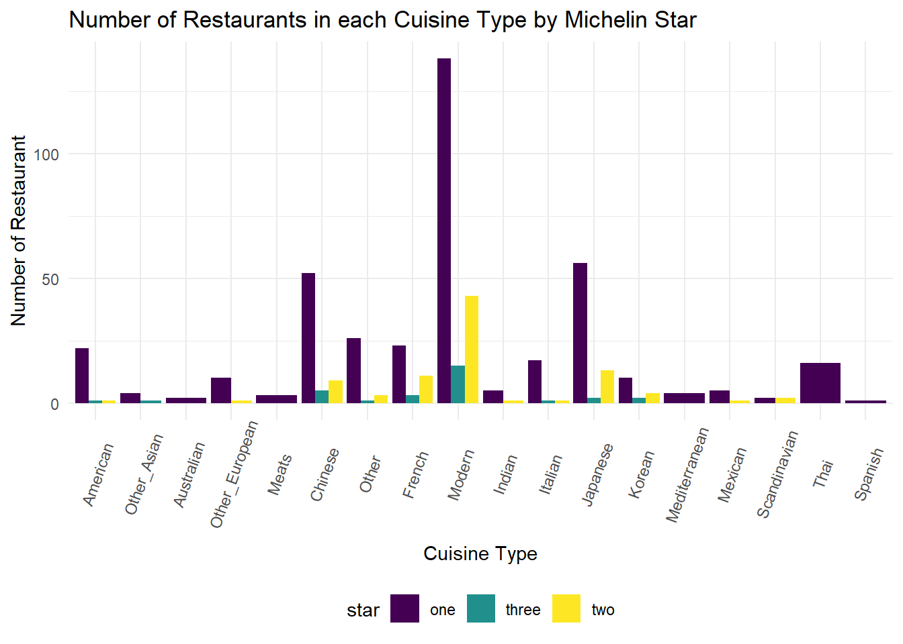

Michelin starts are awarded to restaurants judged to be of a particularly high standard. Eateries that make the grade can be awarded on, two three stars. But what about the prices? Are certain cuisine associated with higher prices? In addition, do the prices varies by the continent?
Within our existing dataset, let’s first take a look at the number of cuisine types in our Michelin restaurant. We can see that among all Michelin Restaurant, Modern Cuisine, Contemporary, Japanese, Creative, Cantonese, Modern British and French are at the top of the list.
cuisine_type = final %>%
group_by(cuisine) %>%
summarise(count = n()) %>%
mutate(cuisine = fct_reorder(cuisine, count))
cuisine_plot =
cuisine_type %>%
ggplot(aes(x = cuisine, y = count)) +
geom_point(color = "red") +
theme(axis.text.x = element_text(angle = 70, vjust = 0.9, hjust = 0.1)) +
ggtitle("Types of Cuisine Among All Micheline Restaurants") +
xlab("Cuisine Type") +
ylab("Number of Restaurant")
ggplotly(cuisine_plot)
Now let’s take a look at the how these restaurants distributed around the world.
country = final %>%
group_by(continent) %>%
summarise(continent_count = n())
knitr::kable(country)| continent | continent_count |
|---|---|
| Asia | 195 |
| Europe | 278 |
| North America | 202 |
| South America | 18 |
| NA | 2 |
We have categorized our cuisine types into smaller group, like Modern French and French are both categorized into the French Cuisine Type so we do not have to many duplicate cuisine types in our analysis.
Now let’s take a look at the Number of Restaurants in each Cuisine Type by Michelin Star. You can see some really interesting points here, Modern Cuisine Type not only have the largest number in restaurants, it also have the largest number of one star Restaurants in the world!
cuisine_type = final_clean %>%
group_by(cuisine_cat,star) %>%
summarise(count = n()) %>%
mutate(cuisine_cat = fct_reorder(cuisine_cat, count))
cuisine_plot =
cuisine_type %>%
ggplot(aes(x = cuisine_cat, y = count, fill=star)) +
geom_bar(stat = 'identity',position = 'dodge') +
theme(axis.text.x = element_text(angle = 70, vjust = 0.6, hjust = 0.5)) +
ggtitle("Number of Restaurants in each Cuisine Type by Michelin Star") +
xlab("Cuisine Type") +
ylab("Number of Restaurant")
cuisine_plot
Now let’s take a look at the cuisine type and their price around the world. We can clearly see that some types of cuisine are usually priced higher than the others. For instance, Mediterranean cuisines (4.00) and Japanese cuisine (3.96) are usually the most expensive, while Australian (1.50) and Cantonese cuisines (2.03) typically have lower prices.
world_plot = final_clean %>%
mutate(cuisine = factor(cuisine_cat)) %>%
group_by(cuisine)%>%
summarise(mean_price = mean(price)) %>%
ggplot(aes(x = cuisine, y = mean_price, color = "red")) +
geom_point(color = "darkgreen")+
theme(axis.text.x = element_text(angle = 60, vjust = 0.6, hjust = 0.5)) +
ggtitle("Cuisine types and their average price around the World") +
xlab("Cuisine Type") +
ylab("Mean Price of this Cuisine Type")
ggplotly(world_plot)
Let’s first explore the relationship between cuisine type and its price in Asia. We can see that in Asia, the most expensive cuisine type is Japanese while cheapest cuisine type is Indian.
asia_plot = final_asia %>%
mutate(cuisine_cat = factor(cuisine_cat)) %>%
group_by(cuisine_cat)%>%
summarise(mean_price = mean(price)) %>%
ggplot(aes(x = cuisine_cat, y = mean_price)) +
geom_point(color = "red")+
theme(axis.text.x = element_text(angle = 65, vjust = 0.6, hjust = 0.5)) +
ggtitle("Asia: The Cuisine type and their average prices") +
xlab("Cuisine Type") +
ylab("Mean Price of this Cuisine Type")
ggplotly(asia_plot)
In Europe, the most expensive cuisine type is Mediterranean which also aligns with our overall plot before stratifying with continents. The cheapest cuisine types in Europe are Thai and Italian, which is really unexpected.
europe_plot = final_europe %>%
mutate(cuisine_cat = factor(cuisine_cat)) %>%
group_by(cuisine_cat)%>%
summarise(mean_price = mean(price)) %>%
ggplot(aes(x = cuisine_cat, y = mean_price)) +
geom_point(color = "purple")+
theme(axis.text.x = element_text(angle = 65, vjust = 0.6, hjust = 0.5)) +
ggtitle("Europe: Cuisine types and their average prices") +
xlab("Cuisine Type") +
ylab("Mean Price of this Cuisine Type")
ggplotly(europe_plot)
In North America, the most expensive cuisine types are Scandinavian and other_European, the cheapest type is Chinese.
na_plot = final_na %>%
mutate(cuisine_cat = factor(cuisine_cat)) %>%
group_by(cuisine_cat)%>%
summarise(mean_price = mean(price)) %>%
ggplot(aes(x = cuisine_cat, y = mean_price)) +
geom_point(color = "darkblue")+
theme(axis.text.x = element_text(angle = 65, vjust = 0.6, hjust = 0.5)) +
ggtitle("North America: Cuisine types and their average prices") +
xlab("Cuisine Type") +
ylab("Mean Price of this Cuisine Type")
ggplotly(na_plot)
In South America, most of the cuisine types are expensive, while only Japanese has a relatively lower prices, which is 4.67. However, please note that in South America we have very limited data so this is not a representative measure of the cuisine types and prices in South America.
sa_plot = final_sa %>%
mutate(cuisine_cat = factor(cuisine_cat)) %>%
group_by(cuisine_cat)%>%
summarise(mean_price = mean(price)) %>%
ggplot(aes(x = cuisine_cat, y = mean_price)) +
geom_point(color = "pink")+
theme(axis.text.x = element_text( vjust = 0.6, hjust = 0.5)) +
ggtitle("South America: The relationship between cuisine types and their prices") +
xlab("Cuisine Type") +
ylab("Mean Price of this Cuisine Type")
ggplotly(sa_plot)